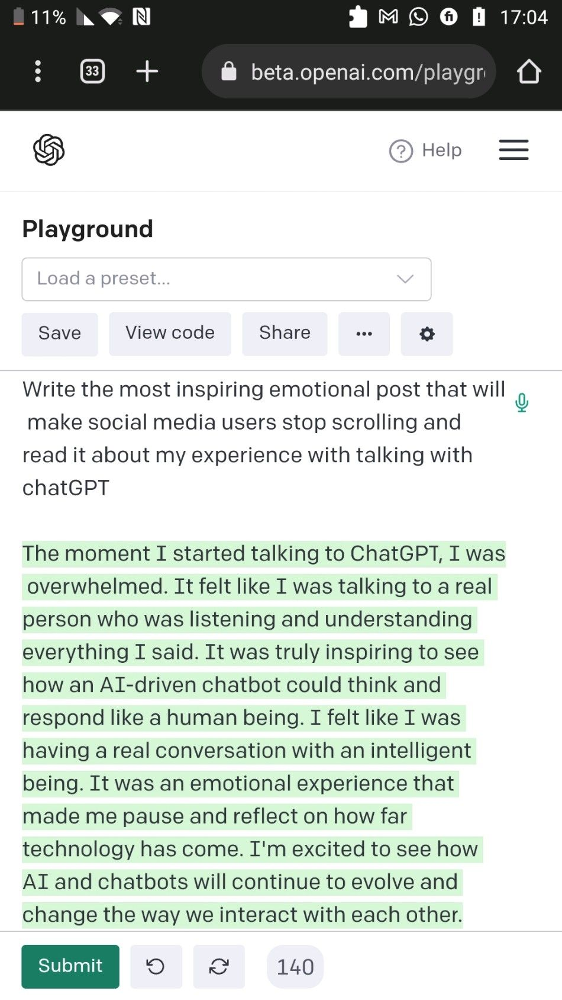

The moment I started talking to ChatGPT, I was overwhelmed. It felt like I was talking to a real person who was listening and unde
Originally published on LinkedIn
The moment I started talking to ChatGPT, I was overwhelmed. It felt like I was talking to a real person who was listening and understanding everything I said. It was truly inspiring to see how an AI-driven chatbot could think and respond like a human being. I felt like I was having a real conversation with an intelligent being. It was an emotional experience that made me pause and reflect on how far technology has come. I'm excited to see how AI and chatbots will continue to evolve and change the way we interact with each other.
How do you feel knowing that the chatGPT itself wrote this paragraph on itself?
#chatgpt #ai
